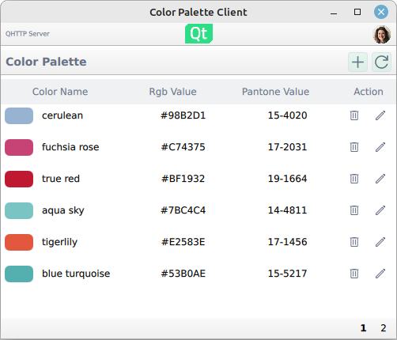
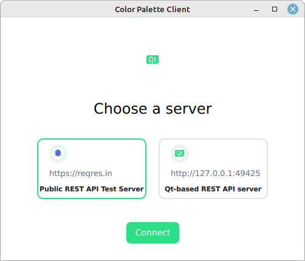
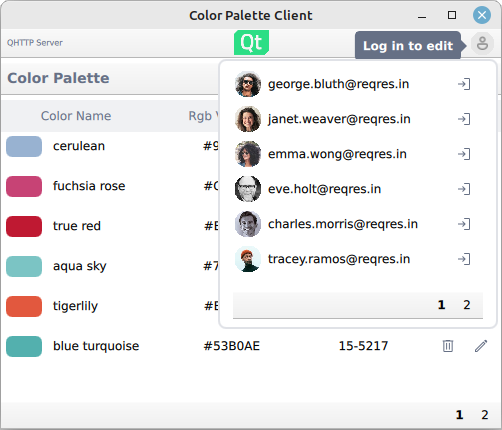
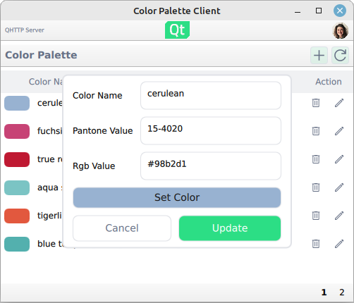

Qt Quick Demo - RESTful API client
Example of how to create a RESTful API QML client.

This example shows how to create a basic QML RESTful API client with an imaginary color palette service. The application uses RESTful communication with the selected server to request and send data. The REST service is provided as a QML element whose child elements wrap the individual JSON data APIs provided by the server.
Application functionality
The example provides the following basic functionalities:
- Select the server to communicate with
- List users and colors
- Login and logout users
- Modify and create new colors
Server selection
At start the application presents the options for the color palette server to communicate with. The predefined options are:
- reqres.in, a publicly available REST API test service
- Qt-based REST API server example in QtHttpServer
Once selected, the RESTful API client issues a test HTTP GET to the color API to check if the service is accessible.

One major difference between the two predefined API options is that the Qt-based REST API server example is a stateful application which allows modifying colors, whereas the reqres.in is a stateless API testing service. In other words, when using the reqres.in backend, modifying the colors has no lasting impact.
List users and colors
The users and colors are paginated resources on the server-side. This means that the server provides the data in chunks called pages. The UI listing reflects this pagination and views the data on pages.
Viewing the data on UI is done with standard QML views:
ListView { id: colorListView model: root.colors.data
Where the model is a list of JSON data received from the server.
Logging in
Logging in happens via the login function provided by the login popup:
userMenu.userLoginService.login({"email" : userInfo.modelData.email, "password" : "apassword", "id" : userInfo.modelData.id})
Under the hood the login sends a HTTP POST request. Upon receiving a successful response the authorization token is extracted from the response, which in turn is then used in subsequent HTTP requests which require the token.

Editing colors
Editing and adding new colors is done in a popup:

Note that uploading the color changes to the server requires that a user has logged in.
REST implementation
The example illustrates one way to compose a REST service from individual resource elements. In this example the resources are the paginated user and color resources plus the login service. The resource elements are bound together by the base URL (server URL) and the shared network access manager.
The basis of the REST service is the RestService element whose children items compose the actual service:
RestService { id: paletteService PaginatedResource { id: users path: "users" } PaginatedResource { id: colors path: "unknown" } BasicLogin { id: colorLogin loginPath: "login" logoutPath: "logout" } }
Upon instantiation the RestService element loops its children elements and sets them up to use the same network access manager. This way the individual resources share the same access details such as the server URL and authorization token.
The actual communication is done with a rest access manager which implements some convenience functionality to deal specifically with HTTP REST APIs and effectively deals with sending and receiving the QNetworkRequest and QNetworkReply as needed.
Running the Example
To run the example from Qt Creator, open the Welcome mode and select the example from Examples. For more information, visit Building and Running an Example.